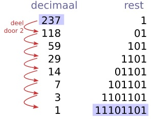

inhoudsopgave
Wat is het binaire stelsel
Voorbeelden
Waarvoor wordt het gebruikt
het binaire stelsel
wat is het binaire stelsel
Het binaire stelsel is een wiskundig systeem dat maar 2 cijfers gebruikt om getallen te laten zien, namenlijk 0 en 1.
Het binaire stelsel wordt vaak gebruikt in computers en elektronica.
In het binaire stelsel worden getallen gemaakt met een combinatie van deze twee cijfers, waarbij elke positie van een getal een macht van 2 is.
Voorbeelden
1 staat voor de waarde van 2^0, wat 1 is.
10 staat voor de waarde van 2^1, wat 2 is.
11 staat voor de waarde van 2^0 + 2^1, wat 3 is.
100 staat voor de waarde van 2^2, wat 4 is, enz.
Waarvoor wordt het gebruikt
Het binaire stelsel wordt gebruikt voor het opslaan en verwerken van gegevens in computers.
dit maakt het mogelijk om lastige berekeningen en dataverwerking uit te voeren met behulp van transitors en logische poorten.
Dit vormt de basis van de werking van de moderne digitale technolochieën.
Het binaire stelsel is een belangrijk concept in de informatica en speelt een cruciale rol in de werking van computers en andere digitale apparaten.
"binaire stelsel filmpje"